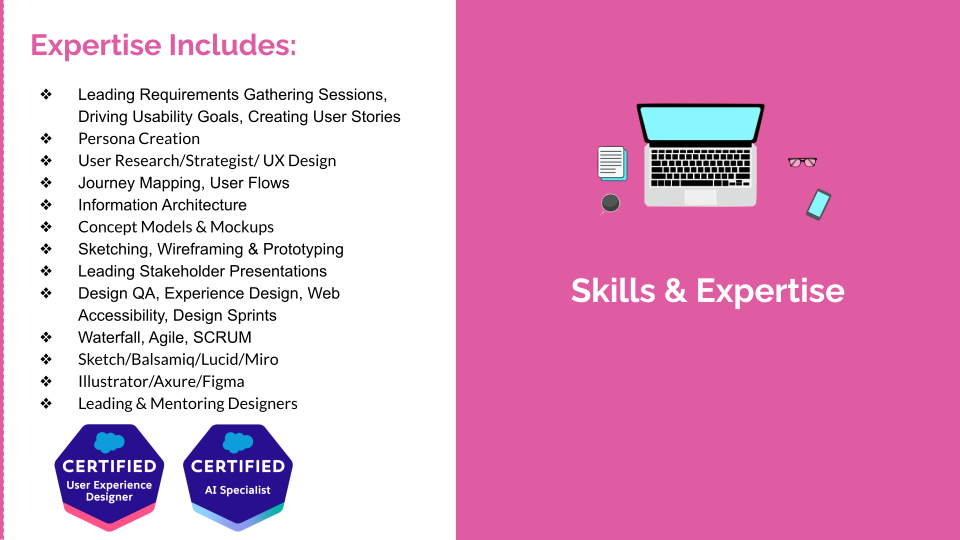
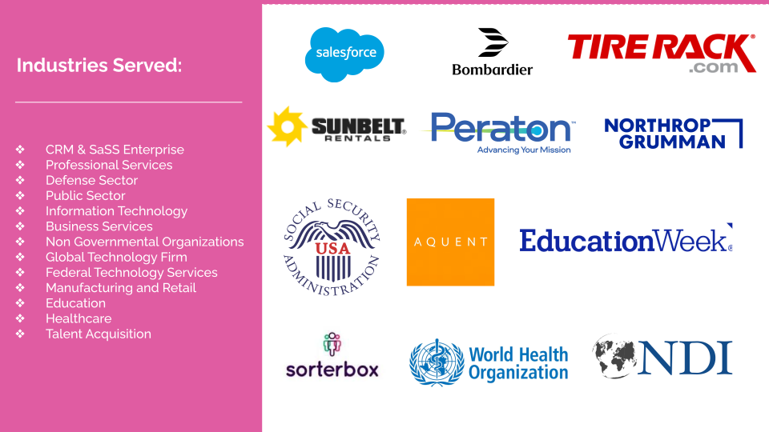

Home
Home About
About Skills
SkillsMy Experience
I’m a Principal UX Designer who loves turning complex problems into simple, human-centered solutions. Over the years, I’ve led design initiatives across web and mobile platforms, driving end-to-end UX workflows—from user research and journey mapping to prototyping and design system creation. I’ve had the opportunity to work on large-scale redesigns, including CRM platforms at Salesforce, where I focused on unifying design language, improving usability, and integrating AI-driven features into everyday workflows.

Industries Served
My career has given me the opportunity to design across industries. I’ve worked with organizations like Northrop Grumman and Peraton in the defense and public sector, helping to simplify complex systems while meeting strict compliance requirements. I’ve also designed B2C products, such as interactive journaling tools in the education space and talent recruitment platforms that make it easier for candidates and employers to connect. Additionally, I’ve consulted on user experience for NGOs like Worth Health Bank and UNICEF, helping mission-driven organizations scale their impact through thoughtful, human-centered design.

I studied Computer Science over 10 years ago, where I first discovered my passion for combining creativity with problem-solving. Since then, I’ve honed my skills in responsive design, accessibility, and scalable design systems, always keeping the user at the center.
My Interests
Outside of design, I love to stay curious and creative. You can often find me exploring new cities with my husband, or practicing yoga and meditation. I also enjoy mentoring early-career designers and sharing knowledge that helps others grow in the field.